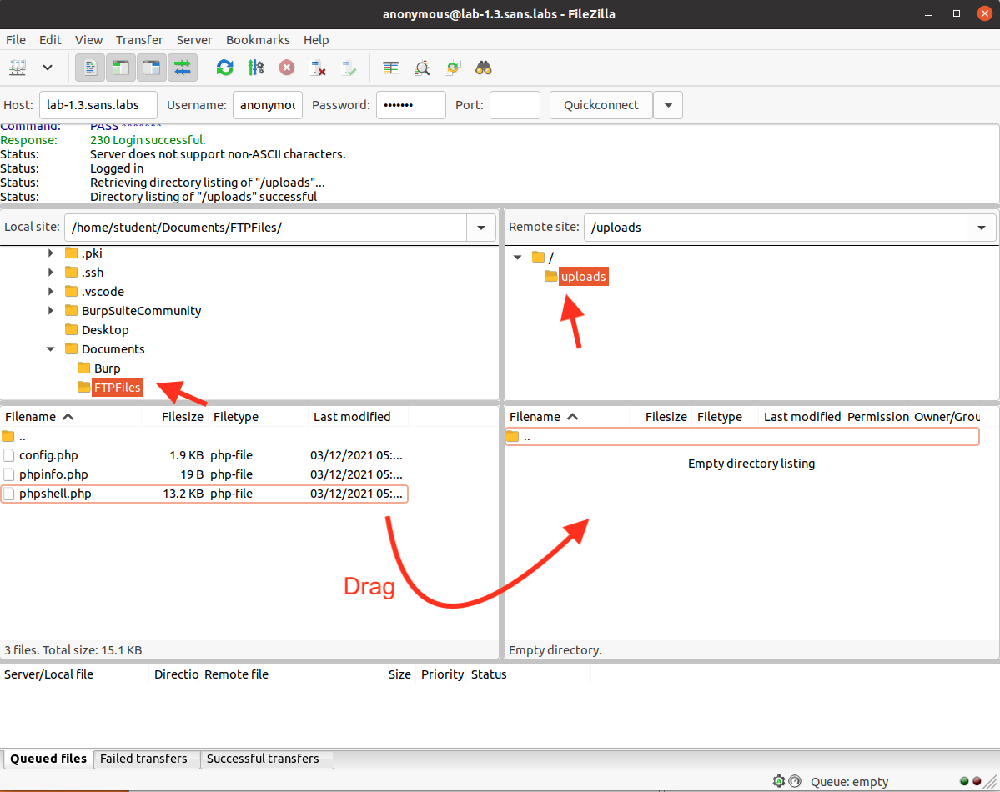
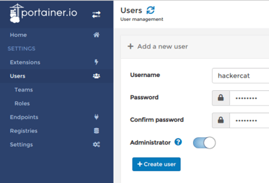

Service Isolation
Objectives
Estimated Time: 15 minutes
Part 1:
In this exercise, you will learn about the importance of isolating services like FTP and HTTP. We will also experiment with web application firewalls to demonstrate how they can prevent sensitive data leakage.
Part 2:
Many organizations deploy web applications in docker containers. Docker containers are administered via an API. Exposing the API, or tools that use it, will expose your Docker containers to attack. In this exercise, we will experiment with a common Docker administration tool called "Portainer".
Part 3:
In this part of the exercise, you will experiment the Web application firewall (mod_security) and it's capability to detect data leak post-compromise and view the logs captured by the Web Application Firewall
Requirements
- Lab VM
Part 1: FTP/HTTP Server Isolation
Step-by-Step Instructions
-
In Chrome, load the URL - http://lab-1.3.sans.labs/ftp/. This will activate the exercise components.
-
Click on the "FileZilla" icon on the left side of the screen (Favorites bar) to start the FTP client.
FileZilla Icon
-
Once FileZilla is launched, enter lab-1.3.sans.labs as the host, the username as anonymous and password as testing. Click "Quickconnect" to connect.

-
After FileZilla is connected, select the "uploads" directory in the lower right-hand pane and set the "Local Site" to "/home/student/Documents/FTPFiles/".

FileZilla Main Screen
-
Highlight the three files (config.php, phpinfo.php, phpshell.php) on the left and drag them to the "Remote Site" pane (lower right, where you clicked on "uploads"). The files are now uploaded.

-
FileZilla uploading files
-
Open Chrome and make sure no proxy is selected.
-
Proceed to http://lab-1.3.sans.labs/ftp in Chrome. You will see a directory listing showing the three files we just uploaded.

FTP Directory in Chrome
-
Click on phpinfo.php. This will execute the phpinfo script we just uploaded. It uses the phpinfo() command to list various php configuration parameters.
Note
The files that we uploaded earlier contained code. These code are executed by the webserver.
-
The PHP configuration is displayed on-screen. Let's inspect what we uploaded via FTP earlier.
-
Open "Files" in the upper left-hand corner of the screen (in the Favorites bar) and navigate to Documents->FTPFiles. Double-click on "phpinfo.php". This will open the file in a text editor.

File

phpinfo.php content
The file contains a single PHP command, "phpinfo()". This command, if executed, creates the output we saw earlier. This proves that the server executed our code.
-
Go back to http://lab-1.3.sans.labs/ftp in Chrome and click on "phpshell.php".
-
Log in with the username sec522 and the password training.
-
Once logged in, users can run any shell command. The operating system in this instance is Unix. You can try normal Unix shell commands such as "ls" to show a listing of files or "uname -a" to show details about the operating system. Feel free to explore the interface and see what evil things can be done using this tool. You are essentially controlling the computer through this remote web shell interface and you are able to run any command the web server is permitted to run.
Part 2: Docker Administration Tools
No Hints
Portainer is running on a container within the course environmnent, and you can connect to it via Chrome (http://portainer.sans.labs/). Try to guess the login credentials and add a rogue admin user.
Step by Step
-
Open Google Chrome and visit http://portainer.sans.labs
-
Log in using the username "sec522" and the password "training".
-
Click on "Users" on the left.
-
Review the currently registered users in the lower part of the User Management interface on the right.
How many users are present?
2
What are their usernames?
admin, sec522
What are their roles?
administrator
-
Enter "hackercat" as the username and "training" as the password. Don't forget to enter "training" again to confirm the password.
-
Check the "Administrator" option.

User Management Dialog in Portainer
-
Click "Create user".
You now created a new administrative user. Optionally, you may test this user by logging out of Portainer and logging in using the new credentials. An attacker could use this new user to access the system even after the administrator changed the password for the sec522 user.
!!! question "What measures can an administrator take to prevent this exploit?
Part 3: ModSecurity Web Application Firewall
Step by Step
We will experiment with the mod_security web application firewall in the following exercise.
-
In Chrome, go to http://normalsecurity.sans.labs and click on the two files "Credit Card Data (cc.html)" and "Source Code (trans.txt)".
What do these two files show?
cc.html shows transaction data including credit card numbers.
trans.txt leaks source code.
Why is it a problem that our application leaks data like this?
cc.html - leaking credit card data is, of course, a problem.
trans.txt - an attacker could use this source code to find vulnerabilities.
-
Try http://normalsecurity.sans.labs/form.php. You will be able to submit the string "cats are evil" or other strings for that matter.
Switch
We are now switching to the mod_security protected version of the same website
-
Revisit the two URLs above (under http://modsecurity.sans.labs). What do you see now? (You may need to reload the page if you still see the original text.)
-
Revisit http://modsecurity.sans.labs/form.php and see if you can still enter "Cats are evil". Try "Cats are cute" instead.
-
Review the web application firewall's log file at http://modsecurity.sans.labs/modsecurity.log
Try to identify the log entries that indicate which URL was blocked and why?
-
Next, we are going to examine the ruleset to see what rules are triggered to block access to the file. Open the configuration file at http://modsecurity.sans.labs/modsecurity.rules.
Try to understand what the rule is matching for.
Conclusion
- Architecture supporting the application has a huge impact on the overall security. Isolation and segmentation are common approaches to secure the application.
- Web Application Firewall are versatile security tools to implement security at the HTTP level without a lot of programming or coding.
Explore Further
- Think about how to implement Web Application Firewall to a production application.